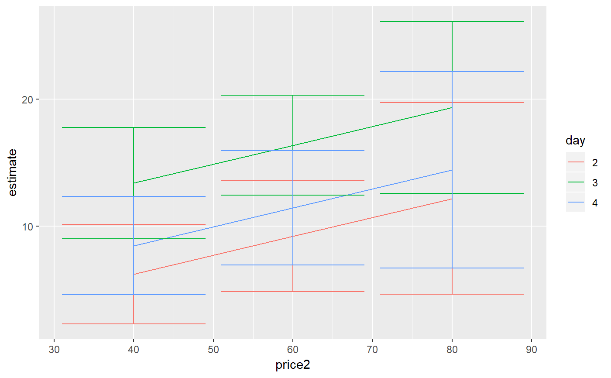

R/emmeans-tidiers.R
emmeans_tidiers.RdTidiers for estimated marginal means objects, which report the predicted
means for factors or factor combinations in a linear model. This
covers three classes:
emmGrid, lsmobj, and ref.grid. (The first class is from the emmeans
package, and is the successor to the latter two classes, which have slightly different
purposes within the lsmeans package but have similar output).
# S3 method for lsmobj tidy(x, conf.level = 0.95, ...) # S3 method for ref.grid tidy(x, ...) # S3 method for emmGrid tidy(x, ...)
| x | "emmGrid", lsmobj", or "ref.grid" object |
|---|---|
| conf.level | Level of confidence interval, used only for
|
| ... | Additional arguments passed to |
A data frame with one observation for each estimated mean, and one column for each combination of factors, along with the following variables:
Estimated least-squares mean
Standard error of estimate
Degrees of freedom
Lower bound of confidence interval
Upper bound of confidence interval
One level of the factor being contrasted
Second level
In cases where the contrast is not made up of two levels, describes each
T-ratio statistic
P-value
There are a large number of arguments that can be
passed on to emmeans::summary.emmGrid() or lsmeans::summary.ref.grid().
By broom convention, we use conf.level to pass the level argument.
if (require("emmeans", quietly = TRUE)) { # linear model for sales of oranges per day oranges_lm1 <- lm(sales1 ~ price1 + price2 + day + store, data = oranges) # reference grid; see vignette("basics", package = "emmeans") oranges_rg1 <- ref_grid(oranges_lm1) td <- tidy(oranges_rg1) td # marginal averages marginal <- emmeans(oranges_rg1, "day") tidy(marginal) # contrasts tidy(contrast(marginal)) tidy(contrast(marginal, method = "pairwise")) # plot confidence intervals library(ggplot2) ggplot(tidy(marginal), aes(day, estimate)) + geom_point() + geom_errorbar(aes(ymin = conf.low, ymax = conf.high)) # by multiple prices by_price <- emmeans(oranges_lm1, "day", by = "price2", at = list(price1 = 50, price2 = c(40, 60, 80), day = c("2", "3", "4")) ) by_price tidy(by_price) ggplot(tidy(by_price), aes(price2, estimate, color = day)) + geom_line() + geom_errorbar(aes(ymin = conf.low, ymax = conf.high)) }